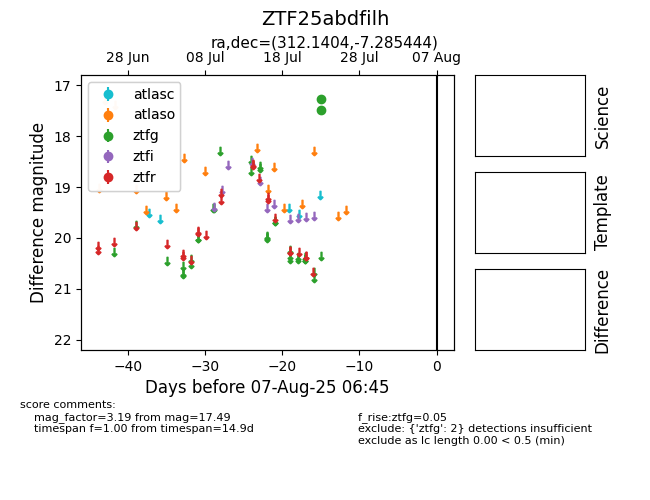

Target ZTF25abdfilh at 2025-08-07 07:30, see:
FINK: fink-portal.org/ZTF25abdfilh
Lasair: lasair-ztf.lsst.ac.uk/objects/ZTF25abdfilh
ALeRCE: alerce.online/object/ZTF25abdfilh
alt names
ZTF25abdfilh (ztf,fink)
coordinates:
equatorial (ra, dec) = (312.1404,-7.28544)
galactic (l, b) = (40.0705,-29.31409)
photometry
last ztfg=17.49
2 ztfg detections
